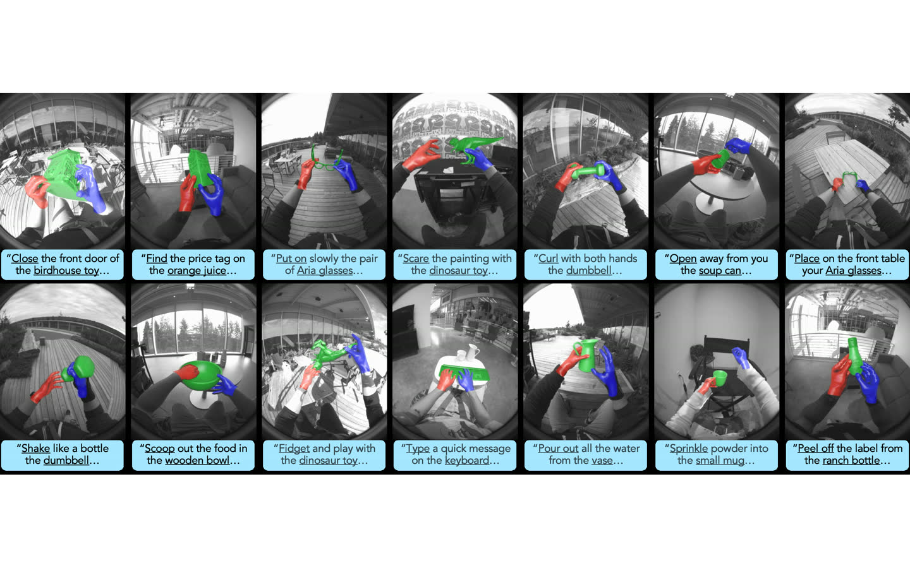
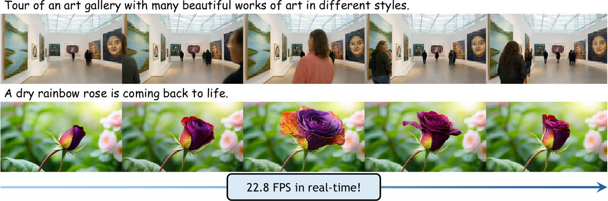
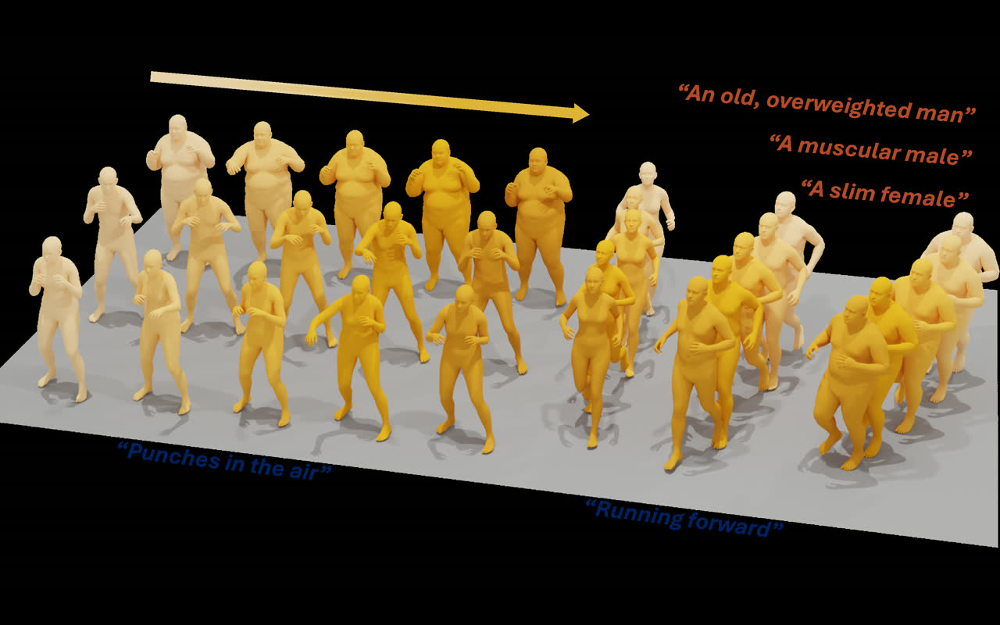

Robotics data pipeline & infrastructure
Collecting, curating, and serving robot-learning data at scale — teleoperation, human video, simulation — so heterogeneous demonstrations become something a policy can train on.
Research Scientist · Meta · Redmond, WA
Embodied AI & robot learning
VLA, world-action models, dexterous manipulation, powered by large-scale robotics data & infra.
Built on a foundation of multi-modal motion generation and 3D humans.
CitationsResearch scientist at Meta in Redmond, working on embodied AI and robot learning. Ph.D. in Computer Engineering from the University of Wisconsin-Madison (2023), advised by Prof. Umit Y. Ogras and working closely with Prof. Yin Li; B.S. from the University of Electronic Science and Technology of China. Earlier work spans multi-modal motion generation, 3D human and head synthesis, and sensor-grounded pose estimation.
Collecting, curating, and serving robot-learning data at scale — teleoperation, human video, simulation — so heterogeneous demonstrations become something a policy can train on.
Vision-language-action policies that read an instruction and a scene and emit control, paired with world models that predict what a body does next, so perception, prediction, and action share one representation.
Multi-fingered hands: contact-rich grasping, in-hand reorientation, and retargeting human hand motion onto robot hardware without losing the dexterity that made the demonstration useful.
Separating the decision from the motor execution that carries it out makes embodied failure attributable: the model chose wrong, or the body could not do it.

Dexterous manipulation needs contact-rich data from real environments, not a capture dome — this is the rig and the pipeline that produce it.

Streaming is what separates a video model from a world model an agent can act inside — it has to keep up with the agent, in real time.
One pretrained motion prior, prompted rather than retrained, covers behaviors and constraints that normally need a model each.

Body morphology changes how a motion actually looks — generating shape and motion together keeps the two from contradicting each other.
Continuous tokens avoid the quantization jitter of discrete motion codes while leaving the pretrained language model intact.
Knowing whose body it is turns fitting from a guess about shape into a pose problem, which is where the accuracy comes from.
The first 3D-aware GAN to synthesize a full head rather than a frontal face — back of the skull and hair included.
Follow-up to PanoHead: the geometry representation, not the generator, was what capped full-head quality.
Pairs three very different sensing modalities on the same subjects, so cross-modal pose methods have something to train and be measured on.
Crosses the domain gap between 2D stylized portraits and animatable 3D heads, where photoreal face priors do not transfer.
Nothing featured yet.
mRI: Multi-modal 3D Human Pose Estimation Dataset using mmWave, RGB-D, and Inertial Sensors
First author
PAniC-3D: Stylized Single-view 3D Reconstruction from Portraits of Anime Characters
Author 7 of 10
HumanCLAW: Can Vision-Language Models Act Through a Body?
Author 12 of 18
SHOW3D: Capturing Scenes of 3D Hands and Objects in the Wild
Author 7 of 11
Ms. Forcing: Efficient Streaming Video Generation with Multi-Scale Patchification and Attention
Author 7 of 8
UMO: Unified In-Context Learning Unlocks Motion Foundation Model Priors
Author 8 of 12
IAM: Identity-Aware Human Motion and Shape Joint Generation
Last author
LLaMo: Scaling Pretrained Language Models for Unified Motion Understanding and Generation with Continuous Autoregressive Tokens
Second author
PHD: Personalized 3D Human Body Fitting with Point Diffusion
Author 7 of 9
PanoHead: Geometry-Aware 3D Full-Head Synthesis in 360°
First author
SphereHead: Stable 3D Full-head Synthesis with Spherical Tri-plane Representation
Author 5 of 7
Nothing here yet.
Click any text on the page to change it. Everything is saved in this browser only.